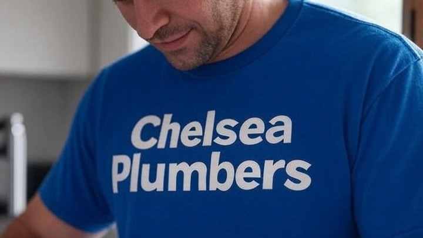
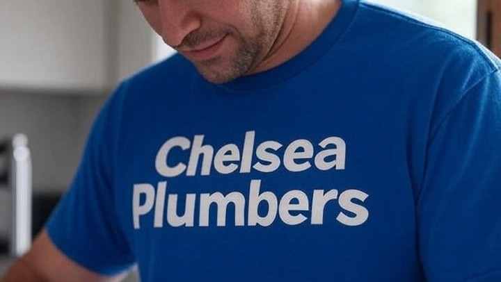

Mental Health Support

One to One Walk and Talk

"its good to talk"
MENd is a community interest company offering one-to-one walk and talk sessions for men, by men who’ve suffered. Not therapy—no qualifications, just shared experience. Many men find groups intimidating (40% never talk about mental health), so our private talks help you open up for any reason—depression (12.5% of men), anxiety, or just to rant about life. Suicide rates are 17.4 per 100,000 for males, 75% of global suicides. For urgent needs, call 999 or Samaritans (116 123). Our walks in West London could save a life.
One-to-one walk and talk for any mental health issue
Support from men who’ve been there
Community-focused in West London
Support Line
 

| Statistic | Value | Source |
|---|---|---|
| Percentage of men in England with a mental health disorder | 12.5% | NHS Digital |
| Male suicide rate per 100,000 in UK | 17.4 | Mental Health UK |
| Percentage of men who have suffered poor mental health | 50% | Bupa Wellbeing Index 2025 |
| Percentage of men who regularly feel worried or low | 40% | Mind |
| Percentage of men reporting depression/anxiety symptoms | 12% | London.gov.uk |
| Percentage of global suicide deaths that are male | 75% | The Lancet |
| Percentage of men prioritizing mental health | 95% | Global Wellness Institute |
| Common mental health problems in men weekly | 15% | Mental Health Foundation |
| Men who avoid talking about mental health | 40% | Priory Group |
| Men experiencing loneliness | 1 in 8 | Mental Health Foundation |
These statistics show the urgent need for support like MENd's one-to-one walks. Your participation or donation could save a life. For urgent needs, call 999 or Samaritans (116 123).
One-to-one walk and talk support in Kensington for any mental health reason, from depression (15% of men) to life’s stresses, by men who’ve been there.
Private walk and talk in Chelsea for any mental health issue, helping men (77% face anxiety/depression) open up without group pressure.
Individual walk and talk support in Hammersmith for any reason, reducing isolation with private talks by men who understand.
One-to-one walk and talk in Fulham for any mental health concern, encouraging men to share privately, as 40% avoid groups.
Private one-to-one talks for any mental health reason, from stress to depression (2 in 5 men feel low regularly). Not therapy, just men helping men.
Reducing Isolation in Fulham
Private Support by Men
Individual Walks in Fulham
One-to-one support for any mental health issue, helping men open up privately (1 in 10 face depression). Not therapy, just shared experience.
Private Support Chelsea
Benefits of One-to-One Talks
Local Individual Support
Read MorePrivate support for any mental health concern, by men who’ve suffered. Helps reduce stress (74% of suicides are male) without group pressure.
Individual Support Hammersmith
Private Conversations for Men
Local One-to-One Support
Read MoreOne-to-one sessions for any mental health reason, ideal for men who avoid groups (40% don’t discuss mental health). Not therapy, just support.
Private Walk and Talk Kensington
Men Supporting Men
Local Private Support
Read MoreYour donation helps provide life-saving one-to-one support for men in need. Every contribution counts and could save a life. For urgent needs, call 999 or Samaritans (116 123).
Donate Now"MENd's one-to-one walk and talk in Kensington helped me open up about my depression. Highly recommend for men needing support."
Member, Kensington
"The private sessions in Chelsea changed my life. Talking one-to-one while walking made it easier to discuss my anxiety."
Member, Chelsea
"In Hammersmith, MENd's individual support provided a safe space to talk about dark thoughts. Grateful for the private approach."
Member, Hammersmith
"Fulham's one-to-one walks helped me vent and build resilience. MENd is essential for men needing to talk privately."
Member, Fulham